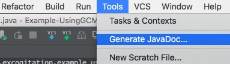
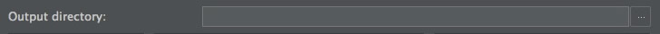
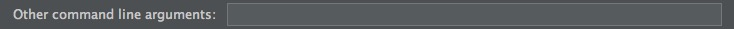

How to
How to
Javadoc Themer basically was written for android based projects hence the below steps (1-3 and 5) are for IntelliJ/Android Studio IDE, but if you use a terminal then skip over to step 4 and just provide the stylesheet as a commandline argument to generate the javadoc with the new stylesheet.
Step 1
Well,basically write javadoc style comments in your java source code.
Step 2

Goto Tools > Generate Javadoc
Step 3

Setup a destination/output directory
Step 4

Provide the required commandline arguments
-bootclasspath <location_of_android_sdk>/platforms/android-23/android.jar -encoding UTF-8 -docencoding utf-8 -charset utf-8 -stylesheetfile <location_of_generated_stylesheet>/javadoc_stylesheet.css
Step 5
And thats all, just hit Ok and you get the newly generated javadoc.